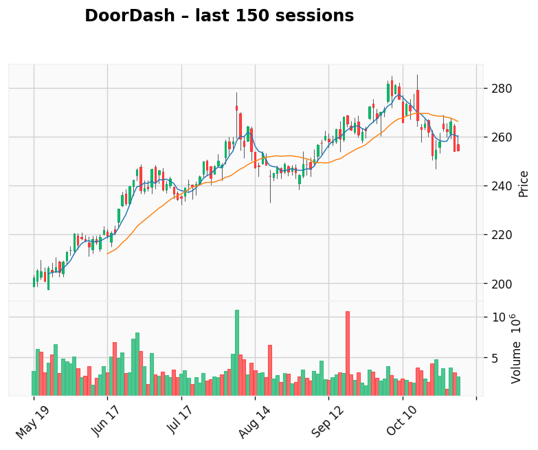

Texas Instruments
Gap: 8.65% Candle: 60.57% (white)
Texas Instruments shows bullish sentiment (60.57%, gap 8.65%). No fresh news available.

AI-generated analysis combining predictive modeling and recent market context.
Gap: 8.65% Candle: 60.57% (white)
Texas Instruments shows bullish sentiment (60.57%, gap 8.65%). No fresh news available.
Gap: 7.07% Candle: 60.02% (white)
DoorDash shows bullish sentiment (60.02%, gap 7.07%). No fresh news available.
